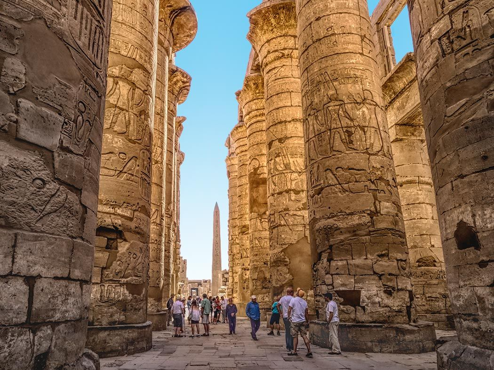
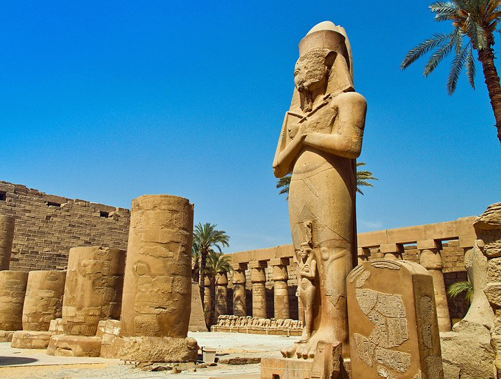
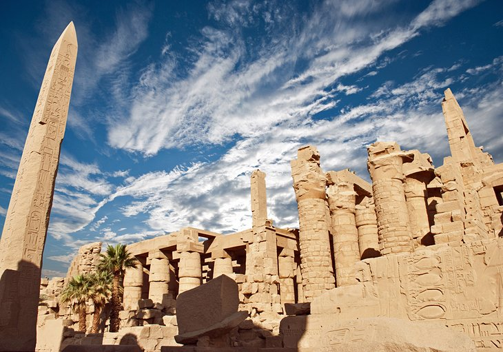
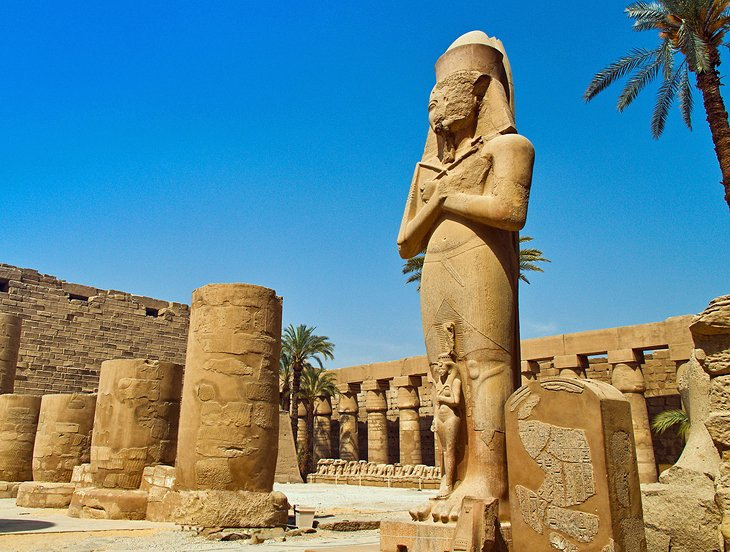
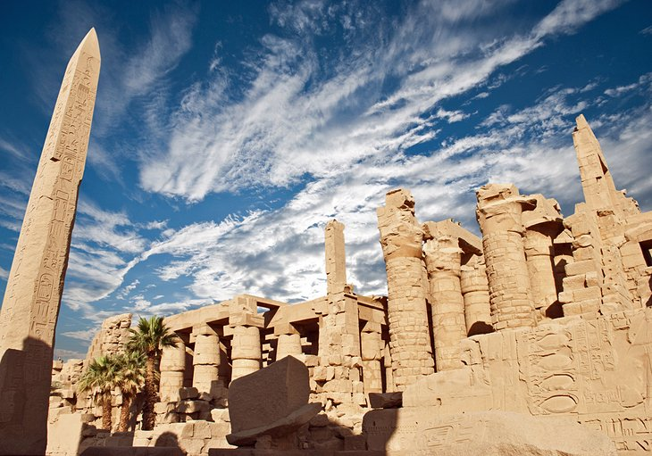
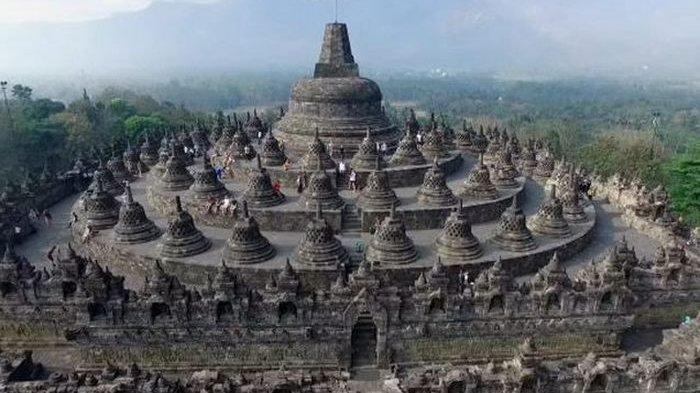
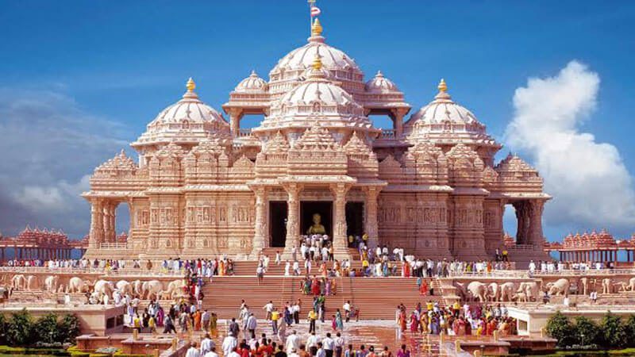
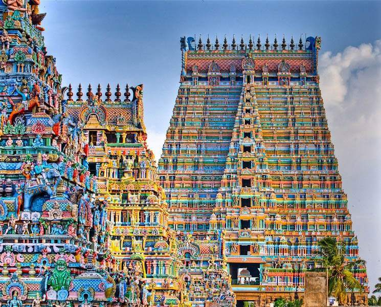

Top 5 Largest Temples in the World
So, what is the biggest temple in the world? To answer this question we first have to establish what a temple is. Although roughly defined as a structure reserved for religious or spiritual activities not all religions use the word temple. In the Western Christian tradition temple is rarely used for example so these churches and cathedrals will be excluded. In contrast, in the Eastern Christian tradition the word temple is used very frequently.
1.Angkor Wat Temple

Angkor s a vast temple complex in Cambodia featuring the magnificent remains of several capitals of the Khmer Empire, from the 9th to the 15th century AD. These include the famous Angkor Wat temple, the largest temple in the world. The Angkor temple stands on a raised terrace above the rest of the city. It is made of three rectangular galleries rising to a central tower, each level higher than the last. The outer gallery of the Angkor Wat temple measures 187 x 215 meters (614 x 705 feet). After this, the next two galleries are connected to each other. On the second level, it measures 100 x 115 meters (328 x 377 feet). The inner gallery is a 60 x 60 meter (197 x 197 feet) square area. The tower above the central shrine rises 65 meters (213 feet) above the ground.
location
2.Karnak
Although badly ruined, few sites in Egypt are more impressive than Karnak. It is the largest ancient temple complex in the world, and represents the combined achievement of many generations of Egyptian builders. Karnak actually consists of several temples. One of most famous structures of Karnak is the Hypostyle Hall, a hall area of 5,000 m2 (50,000 sq ft). The 134 massive columns arranged in 16 rows supported a roof that has now fallen. At a height of 24 meters (80 feet) the 2 middle rows are higher than the others.
Location 



3.Borobudur
Located on the Indonesian island of Java, 40 km (25 miles) northwest of Yogyakarta, the Borobudur is the largest Buddhist temple in the world. The temple was built over a period of some 75 years in the 8th and 9th centuries by the kingdom of Sailendra, out of an estimated 2 million blocks of stone. The Borobodur can be divided into three groups: base, body, and top, which resembles the three major division of a human body. The base is a 123×123 meters (403.5×403.5 feet) square in size and 4 meters (13 feet) high of walls. The total surface area is approximately 2,500 m2. The body is composed of 5 square platforms each with diminishing heights. The top is a monumental stupa with a main dome at the center . The dome has a height of 35 meters (115 feet) from the ground level.
Location4.Akshardham
Completed in 2005 by the spiritual organization BAPS, no expense has been spared in decorating the Akshardham temple. The building was inspired and moderated by Pramukh Swami Maharaj, the current head of Swaminarayan Hinduism. The central monument is 43 meters (141 feet) high, 96 meters (316 feet) wide, and 110 meters (370 feet) long, and is covered top to bottom with carved details of flora, fauna, dancers, musicians, and deities. It is constructed entirely from Rajasthani pink sandstone and Italian Carrara marble, and has no support from steel or concrete.
Location5.Sri Ranganathaswamy
Dedicated to Lord Ranganatha (a reclining form of Lord Vishnu), the Sri Ranganathaswamy Temple in Srirangam is an important shrine that receives millions of visitors and pilgrims every year. With an area of 156 acres (6,31,000 m²), the Sri Ranganathaswamy Temple is one of the largest temples in the world. In fact, the temple can be easily termed as the largest functioning Hindu temple complex in the world. The oldest structure of the temple dates back to the 10th century. There are 21 gopurams (tower), among which the Rajagopuram is the biggest temple in South India. It is 73 meters (240 feet) in height, and dates from the 17th century, although it was only completed in 1987.
Location